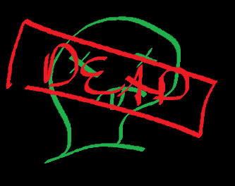

ↄƐ: NAV :3c
/\/\8by4/\/\
1 - 8by4.projects
2 - 8by4.arts
{[eggnog]}
1 - eggnog.projects
2 - eggnog.arts
eggnog.articles
uuhhhh IDK
why master shifu is better (in every way) to oogway
♪Oogway Ascends - Kung Fu Panda Soundtrack♪

It's made so apparent throughout the whole film why Master Shifu is better than Master Oogway (picture; dead) that I fear I'm wasting my time writing this. Oogway's words and actions betray his competence as a leader throughout the whole goddamn movie. Let's look at the story in chronological order to see how much of a fuck up Oogway is.
First, Shifu creates the greatest Kung Fu WARRIOR of all time in Tai Lung. Already points to Shifu for that. He may have promised Tai Lung the Dragon Scroll and built up expectations. I'll admit this is a bit of a blunder but, as we'll see later, the effects of this mistake shouldn't've been so drastic. Then, out of nowhere, Oogway decides that Tai Lung "has darkness in him" or some shit, whatever that means. So if he knew this Tai Lung was so evil deep down than why in the fuck did Oogway let Shifu train him? We all know that Shifu is THE GOAT and is gonna turn whoever he trains into an unstoppable force. So why didn't Oogway say anything earlier? And maybe Oogway's right: Tai Lung flips his shit and attacks the village when he can't see the scroll. But if the scroll doesn't actually have anything on it than what's so fucking dangerous about letting Tai Lung see it? Oogway just denies Tai Lung everything he's ever worked for for seemingly no reason, then expects him to be chill about it. Dumbass. So before the real plot begins, Oogways has already royally fucked up.
Then dumbass selects Po as the Dragon Warrior BY COMPLETE ACCIDENT and is too proud to admit he fucked up. So now this shriveled hermit has TWICE ruined the morale of the experts that Shifu trained. Shifu spent his whole life training some of the greatest kung fu warriors of all time and Oogway throws it all away for because he thinks he know what's up. Then Tai Lung escapes some crazy secure prison (remember Shifu trained this MF) and when Shifu finds out, he's freaks out because he actually cares about the village. But Oogway pretends like it's no big deal because he doesn't give two shits about no one. And then of course he fucking offs himself. So now Shifu (THE GOAT) has to clean up Oogway's mess and train some loser no-life Panda to defeat the greatest kung fu warrior of all time. AND SHIFU IS THE GOAT SO HE PULLS IT OFF.
I don't give a shit if you wanna put Oogway's pseudointellectual quotes on your twitter profile but don't fucking pretend like that low-life did anything for anyone.